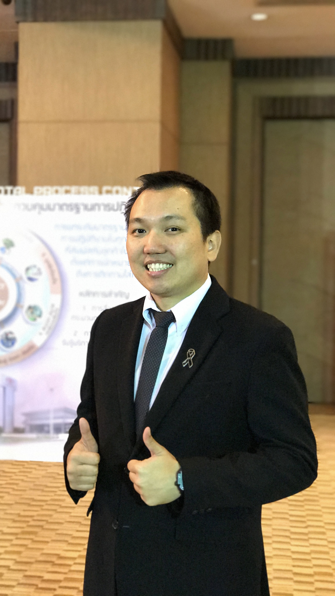

Supakrit Sripunvoraskul

Summary
Almost 20 years background of Automotive industry, After-sales system development
Education
- Bachelor Degree : Industrial Engineering / Chulalongkorn University
Work Experience
Toyota Motor Thailand
- 2020-2024 : Manager of After-sales System Development
- 2016-2019 : Assistant Manager of After-sales System Development
- 2014-2015 : Expat to Toyota Motor Asia (Singapore)
- 2008-2013 : Chief Engineer of After-sales planning
- 2005-2007 : Engineer of After-sales planning
Toshiba Consumer Products Thailand
- 2004-2005: Engineer of Washing Machnie Design & Development
Skill
Hard Skill
- Database Management : Intermediate of Microsot Excel, Access
- Communicate in English
- Basic Photo & Video Editing
Soft Skill
- Fast learner
- Calm & Patient
Certificaiton
- Understanding Data Science from DataCamp
Other